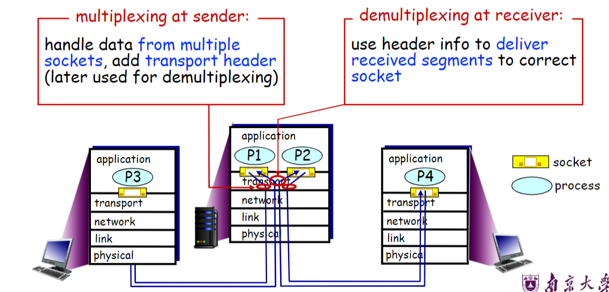
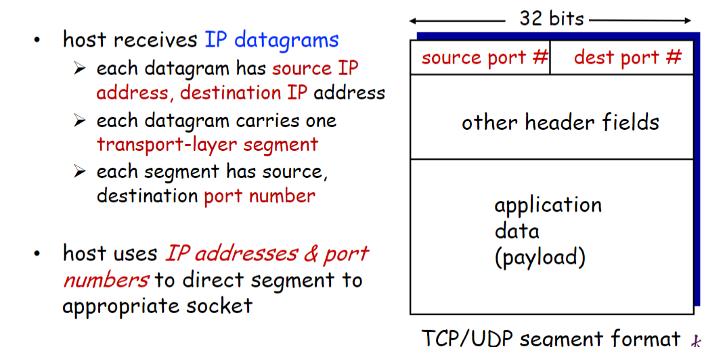
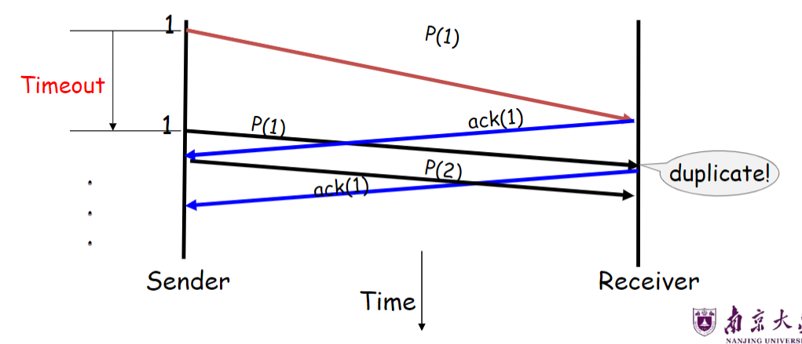
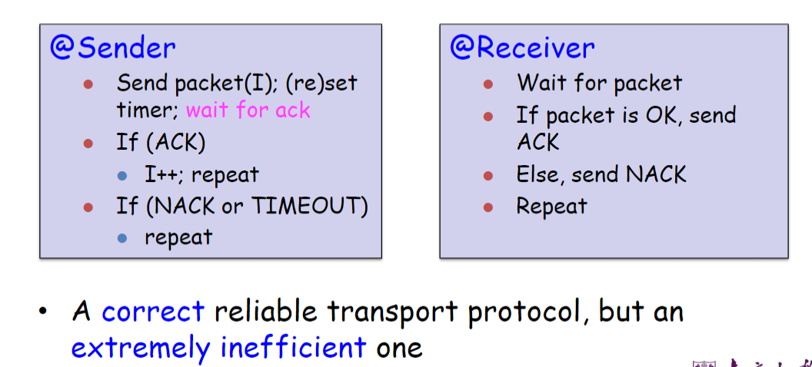

互联网计算-03运输层
运输层基础
网络传输服务
- 在不同主机上运行的应用程序进程之间提供逻辑通信
运输层协议在端系统（主机）中实现
- 发送端：将应用程序消息分成段，传递到网络层
- 接收端：将片段重新组装成消息，传递给应用层
为什么需要运输层：
- IP 数据包被寻址到主机，但端到端通信是在主机上的应用程序进程之间进行的
- 需要一种方法来决定哪些数据包去往哪些应用程序（多路复用/多路分解）
- IP 提供了一种弱服务模型（尽力而为）
- 数据包可能被损坏、延迟、丢弃、重新排序、复制
- 没有关于发送多少流量和何时发送的指导
运输层的作用
- 进程之间的通信
- 为应用层提供通用的端到端服务[可选]
- TCP 和 UDP 是常见的传输协议
- UDP 是一种极简的传输协议
- TCP 提供了一种可靠、有序的字节流抽象
- 有拥塞控制，但没有性能保证（延迟、b/w 等）
应用与套接字
Socket：应用程序进程的软件抽象，用于与（操作系统中的传输层）交换网络消息
运输层寻址：<HostIP, Port>, called a socket
两种套接字类型：
- UDP socket: SOCK_DGRAM
- TCP socker: SOCK_STREAM
端口 Port：有助于区分应用程序的 16 位数字
- 数据包在传输头中携带 src/dst 端口号
操作系统存储套接字和端口之间的映射：
- 对于 UDP ports (SOCK_DGRAM)
- OS stores (local port, local IP address)<–> socket
- 对于 TCP ports (SOCK_STREAM)
- OS stores (local port, local IP, remote port, remote IP) <–> socket
多路复用与多路分解
多路复用 Multiplexing Mux: 在源主机上收集和组合来自不同应用程序的数据块，并将其传递到网络层
多路分解 Demultiplexing Demux: 从多路复用的流中向相应的套接字传递正确的数据

多路分解的工作原理：

在主机上的每个套接字能够分配一个端口号，当报文段到达主机时，运输层检查报文段中的目的端口号，并将其定向到相应的套接字。然后报文段中的数据通过套接字进入其所连接的进程。
无连接的多路分解
一个 UDP 套接字由一个二元组全面标识，该二元组包含一个目的 IP 地址和一个目的端口号。因此，如果两个 UDP 报文段有不同的源 IP 地址和/或源端口号，但具有相同的目的 IP 地址和目的端口号，那么这两个报文段将通过相同的目的套接字被定向到相同的目的进程。
面向连接的多路分解
当一个 TCP 报文段到达主机时，所有 4 个字段（源 IP 地址、源端口、目的 IP 地址、目的端口）被用来将报文段定向（分解）到相应的套接字。
可靠数据传输设计
数据包损坏：
如何从错误中恢复：
- 确认（ACK）：接收方明确地告诉发送方 pkt 接收到 OK
- 否定确认（NAK）：接收方明确地“告知”发送方 pkt 有错误
- 发送方在收到 NAK 后重新发送 pkt
What if the ACK/NACK is corrupted?
- Data and ACK packets carry sequence numbers 数据和 ACK 数据包携带序列号
数据包丢失：
定时器驱动的丢失检测：在发送数据包时设置定时器；超时时重新传输
- 定时器驱动的重传可能会导致重复

解决方案的组成：
- Checksums: to detect bit errors
- Timers: to detect loss
- Acknowledgement: positive or negative
- Sequence numbers: to deal with duplicates
可靠数据传输协议设计
Stop and Wait

效率很低，网络协议限制了物理资源的使用
Pipelined protocols 流水线
发送方允许多个“正在进行中”但尚未确认的 pkt
- 必须增加序列号的范围
- 在发送方和/或接收方进行缓冲
三个设计决策
发送方可以发送哪些数据包？
- 滑动窗口
接收方如何接收数据包？
- 累积
- 选择性
发送方重新发送哪些数据包？
- Go-Back N (GBN)
- Selective Repeat (SR)
滑动窗口 Sliding window
窗口=相邻序列号集
- 集合的大小是窗口大小；假设窗口大小为 n
基本思想：一次最多发送 n 个数据包
- 发送方可以在其窗口中发送数据包
- 接收方可以在其窗口中接收数据包
- 可接受的数据包窗口在成功接收/确认时“滑动”
- 窗口包含可能仍在传输中的所有数据包